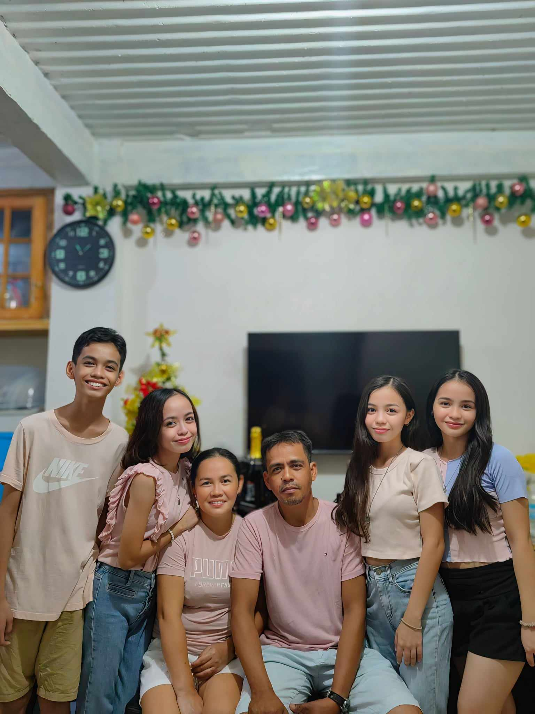
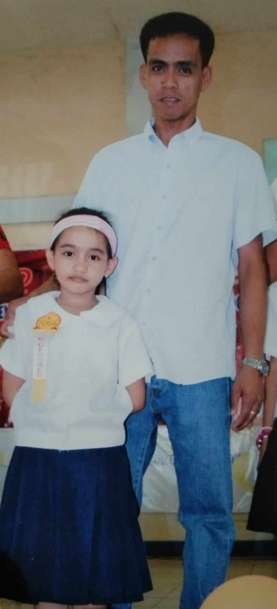
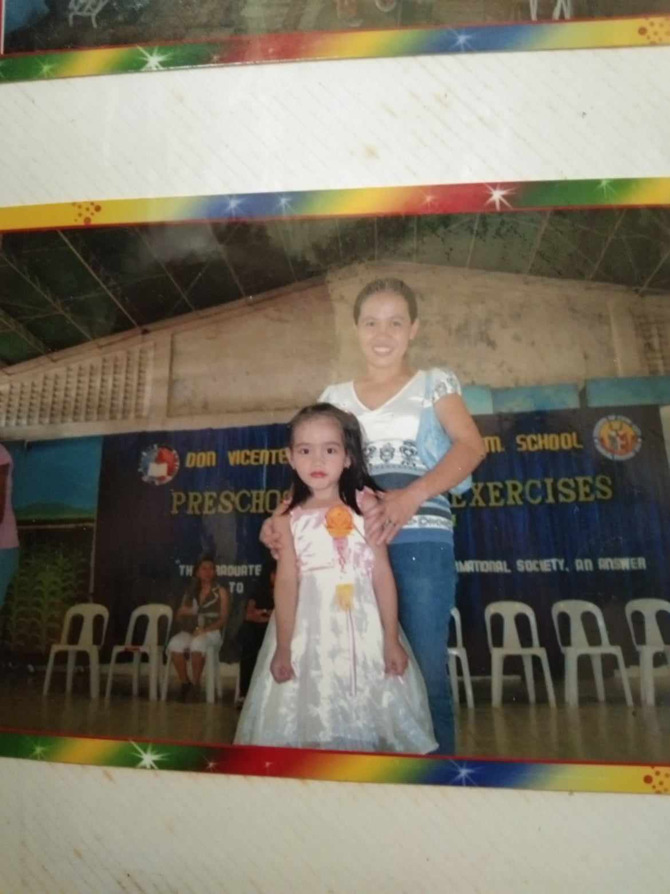
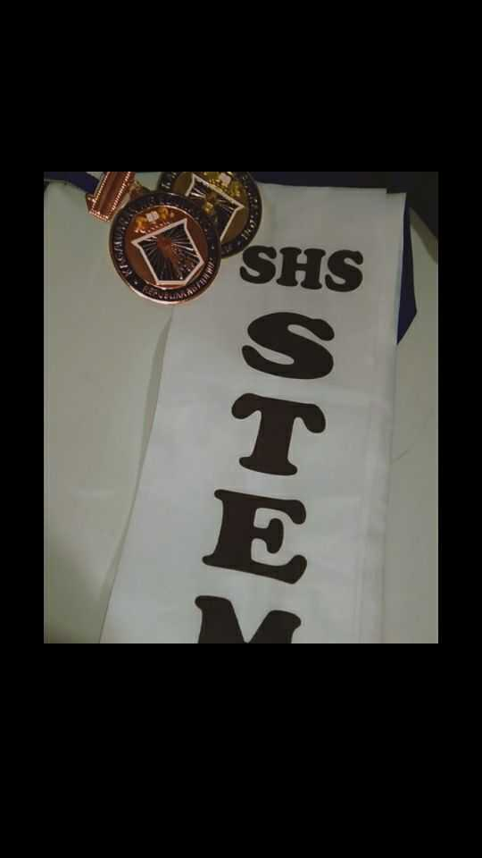
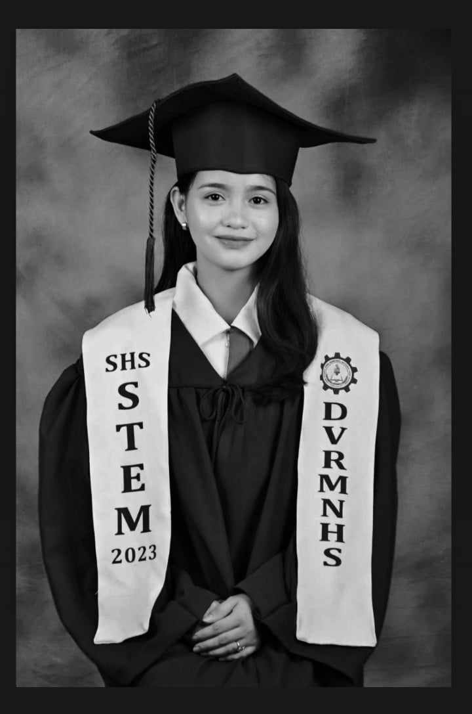

Skills
- Programming Languages: Python, Java, JavaScript
- Web Development: HTML, CSS, React
- Soft Skills: Teamwork, Communication, Problem-Solving
Here are some logos of the technologies I am familiar with:


Jo is my nickname that reflects my approachable and friendly nature just like I believe in keeping things simple yet impactful <3
My name is Joanna B. Quiñanola, and I am from Villa Kalubihan Basak San Nicolas Cebu City. I’m 19 yrs old and a second year BS Information Technology student at CTU University.
I am pursuing a Bachelor of Science in Information Technology. While my academic focus is on coding, web design, and tech, there's much more to me than just my studies. I’m passionate about learning and constantly exploring how technology can transform the world around us.
When I’m feeling down or need a moment of relaxation, I find solace in music specifically English songs. Music helps me stay grounded and provides me with a sense of comfort, acting as a companion through various ups and downs.
I believe strongly in the power of creativity and self-expression. My values center around curiosity, kindness, and resilience. I’m curious about the world, eager to learn not just from books and classes but from every experience and person I meet. I strive to be kind, to understand people from different walks of life, and to approach situations with empathy. And resilience is my backbone whether it’s a tough project, a challenging course, or personal setbacks, I’m determined to push through and emerge stronger.
Outside of academics and technology, I enjoy exploring different perspectives, challenging myself with new ideas, and learning from diverse cultures. Life, to me, is a journey of continuous growth, and I aspire to live in a way that brings value not only to myself but also to those around me and also to my family, that inspires me to achieve all of these things.
My journey began with small steps, an oversized backpack, and wide-eyed curiosity. Elementary school was filled with a love for learning about anything and everything science experiments, spelling bees, and the thrill of new friends. I quickly developed a fondness for exploring and understanding how things worked, always eager to dive into each day with enthusiasm.
As I transitioned to high school, the world grew a bit larger, and so did the challenges. High school was an adventure of discovery, finding passions, and trying out new interests. I faced the ups and downs of academics, found a few favorite subjects, and worked hard to balance studies with hobbies. This phase was about pushing boundaries, making lifelong friends, and learning a lot about self-expression.
In senior high, I was ready for something different a time for self-definition. I had to make more concrete decisions about the future and began focusing on areas that would help shape a career path. It was an exciting period full of challenging projects, group work, and preparation for college. Senior high felt like a bridge between adolescence and adulthood, and I tackled each subject with a new level of maturity.
Today, as a second-year BSIT student, I find college life a mix of exciting, challenging, and rewarding moments. College has opened doors to new possibilities, from coding projects and IT-based courses to learning design skills that could be a stepping stone to a dream career. My learning journey is now about turning passion into a skill set, and the college experience has become more than just academics it’s about self-growth and preparing for a successful future.
   Here are some logos of the technologies I am familiar with:
You can reach me via email at joannaquinz143@gmail.com.
Connect with me on social media: